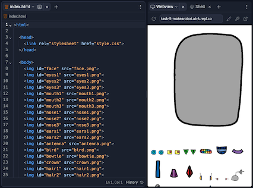
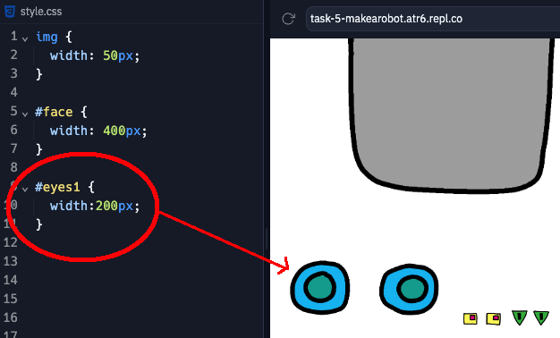
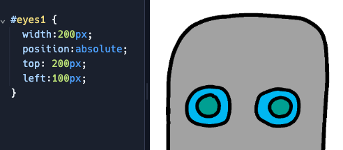

Make a Robot (CSS positioning, id selectors)
In this project, you'll learn how to position images on a website and design your own robot!
-
Visit bit.ly/MakeaRobot to open a starter project. Click the "Fork" button to make your own copy.

Open theindex.htmlfile and take a look. Each image tag<img>has its ownid. You can use an image'sidto give it its own style, using the#symbol in your CSS file. -
Open the
style.cssfile. Add the following CSS code to adjust the robot's eyes.#eyes1 { width: 200px; }eyes1image by using#eyes1in your CSS code. If you prefer different eyes, you can use#eyes2or#eyes3instead. -
Notice how each image is displayed one after the other? This is called relative positioning. If you want to tell the web browser exactly where to place your robot’s eyes, you’ll need to use absolute positioning instead.
Add the following CSS code to adjust theeyes1image:position: absolute; top: 200px; left: 100px; -
The CSS position is measured from the top-left corner of the webpage. You can use
bottominstead oftopto tell the browser how far from the bottom of the screen to show the image, as well asrightinstead ofleft.
-
Let's give your robot a mouth! Add the following CSS code to the
style.cssfile.#mouth1 { width: 50px; position: absolute; top: 200px; left: 200px; }
-
Use what you’ve learned to finish designing your own robot. Here are some examples of how your robot might look.

Credits: this lesson was adapted from both Toni Scullion's lesson plan and the corresponding Raspberry Pi Foundation project.